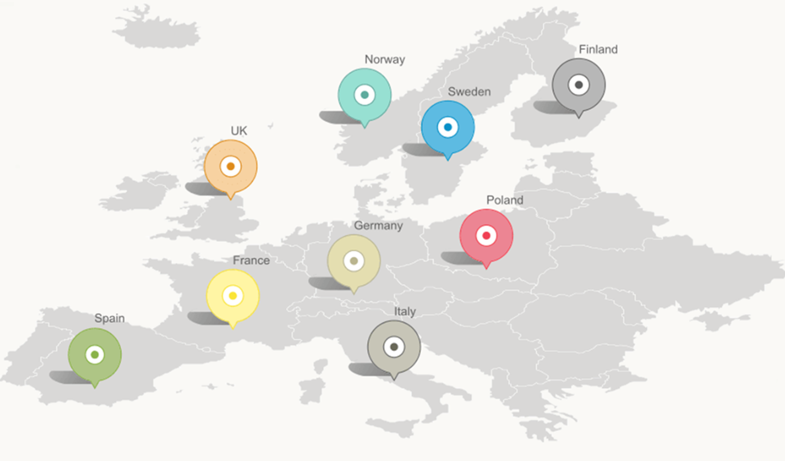

Level of NEDC test discrepancies
Level of NEDC test discrepancies

Currently there is no official body in place to police the testing procedure and monitor the results taken from the different labs.

Test conducted include simulating in town (urban) and out of town (extra urban) driving conditions, reaching a top speed of 75mph for 10 seconds. It ddoes not included sustained motorway driving, where many cars consume the most amount of fuel

Removing roof rails, extra lights and even the passenger door mirrow is permitted. Making the card lighter results in a more impressive mpg figure.

The same test procedure is followed by all manufacturers, however, they can pick from any credited lab to do the test. The issue here, how is it possible to compare results from multiple labs using different equipment?

The rule allows vehicle makers to arbitrarily knock 4% off the results at the end.

No restriction in tyre pressure. Higher-than-recommended pressures may be used to reduce rolling resistance, taking load off the engine and reducing fuel usage.

Modern vehicles are being introduced with adaptable driving modes, such as an 'eco mode' for fuel efficient driving. Manufacturers have the option to elect 'eco mode' rathar than the default settings of the vehicle for more impressive mpg.

The rule allows vehicle makers to arbitrarily knock 4% off the results at the end.
₤113 / €183
98%
30%
Conclusion

The bare bones of the test have been used since the 1970s, was last updated in 1997, doesn't account for modern engine technology such as hybrid power, and does a poor job on reflecting real-world driving conditions.
That's why Which? (which.co.uk) is now calling for it to be replaced with a better test in 2017, as scheduled, rather than being delayed until 2020.
"The NEDC was last updated back in 1997"
Sources:
http://www.which.co.uk/news/2015/04/false-economy---98-of-cars-cant-match-their-mpg-claims-401750/
http://blog.greenflag.com/2015/car-fuel-economy-new-test-to-give-more-achievable-official-mpg/
http://www.parkers.co.uk/company-cars/news-and-advice/advice/2013/june/fuel-economy-claimed-figures-vs-real-world-mpg/
http://www.nextgreencar.com/mpg/real-mpg/
https://recombu.com/cars/article/fuel-for-thought-majority-of-new-cars-failing-to-achieve-claimed-mpg
http://www.autocar.co.uk/blogs/tester-s-notes/vw-e-nedc-and-benefits-realistic-range-claims
http://www.carmag.co.za/technical_post/claimed-vs-real-fuel-consumption/
http://www.iol.co.za/motoring/industry-news/how-carmakers-fake-economy-figures-1.1765788#.Vc3Jfrbh5z0
http://www.greencarguide.co.uk/features/new-european-driving-cycle-nedc-fuel-economy-test-work/